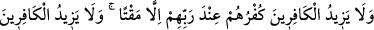
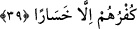
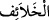

ekinden bir şey bıraktın mı?” buyurdu. Musa (a.s.): “Hayır ya Rabbi! Ancak işe
yaramayanları bıraktım,” dedi. Bunun üzerine Allah Teâlâ “İşte böyle ben de
kullarımdan hayırsız olanları, kendilerinde hayır ve îman olmayanları, îmansız olanları
cehenneme atıyorum,” buyurdu.
Mesnevî’de şöyle der:
Yaratılmışlarda pak ruhlar vardır.
Çamurlu kara ruhlar da vardır.
Buğdayları samandan ayırmak gibi,
Bu iyi ve kötüyü de ortaya koymak gereklidir.
39. Sizi yeryüzünde halîfeler yapan O’dur. Onun için kim inkâr ederse, inkârı
kendi zararınadır. Kâfirlerin küfrü, Rableri katında kendileri için ancak gazabı
arttırır. Kâfirlerin küfrü, kendilerine ziyandan başka bir şey getirmez.
“Sizi yeryüzünde halîfeler yapan O’dur.” yâni Allah’tır.
“ kelimesi, “halîfe”nin çoğuludur. “ ise “halîf”in çoğuludur. Her ikisi de
müstahlef yâni halîfe/vekil seçilmiş demektir. Yâni Allah Teâlâ sizi yeryüzünün halîfesi
yaptı; yeryüzünün tasarruf anahtarlarını size verdi; sizi yeryüzündekilere hükümran kıldı
ve yeryüzünün menfaatlerini size mübah kıldı, demektir. Yahut sizi, sizden önceki
ümmetlere halîfe yaptı. O’nu birleyip itâat etmekle O’na şükredesiniz diye onların
ellerinde bulunan dünya metâına sizi mîrasçı kıldı. Bu kavl-i ilâhîde şuna işâret
edilmektedir ki, fazîlet ve rezâlet ehlinden her biri dünya yurdunda Allah’ın
halîfelerinden biridir. Fazîlet ehli olanlar kendi Rahmânî ahlâk ve ledünnî ilim
aynalarında Allah Teâlâ’nın hârika sanat güzelliğini ızhar edip ortaya koymakta; rezâlet
ehli olanlar da kendi el sanatlarında ve meslek aynalarında Allah Teâlâ’nın hârika,
müthiş ve ilginç güzellik ve kemâlâtını ızhar etmektedirler.
İşte Allah Teâlâ yine insanı ekmek ve benzeri bir çok şeyi yaratmada kendisine halîfe
seçmiştir. Zira Allah Teâlâ müstakil olarak buğdayı yarattı. İnsan, hilâfeti gereği bu
buğdayı öğütüp ondan ekmek yapmaktadır. Yine elbise de böyledir. Allah Teâlâ pamuğu
yarattı; insan, hilâfeti sebebiyle onu eğirip dokuyarak elbise yapmaktadır. Bu örnekler
hep bu minval üzere uzar gider.
“Onun için kim” kendisini halîfe yapanın emrine muhâlefet ederek, hilâfet nimetini